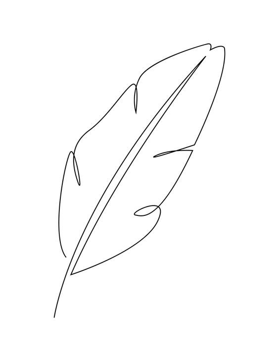
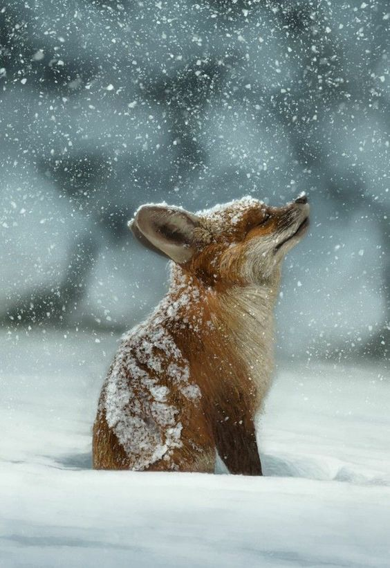
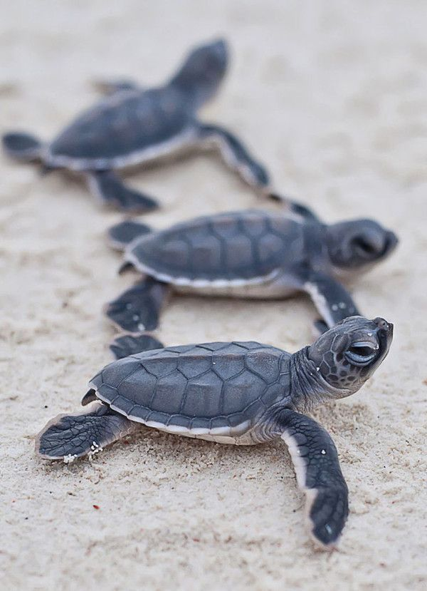
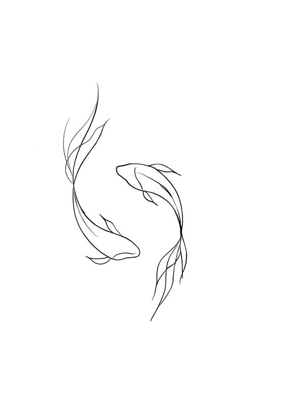

начало |
"Плюшени" крави |
Стъклена жаба |
Панда мравка |
Листовиден морски дракон |
|
 |
Животни които дори
не сте подозирали, че съществуват
Според учени нашата
планета е дом на около 8,7 милиона
растителни и животински видове. Изумително
е, че след стотици години биологични проучвания
продължаваме да търсим и откриваме нови видове
животни, птици,насекоми и риби. Някои от тези
същества са толкова неповторими, че е трудно да
повярваме, че живеем на същата планета като тях. Изглежда, че природата в никакъв случай няма да спре да провокира въображението ни и да ни изненадва със своята креативност!В този сайт ще ви разкажем за някои неповторими животни, които са толкова необикновенни, че ще ви накарат да ахнете!
|
 |